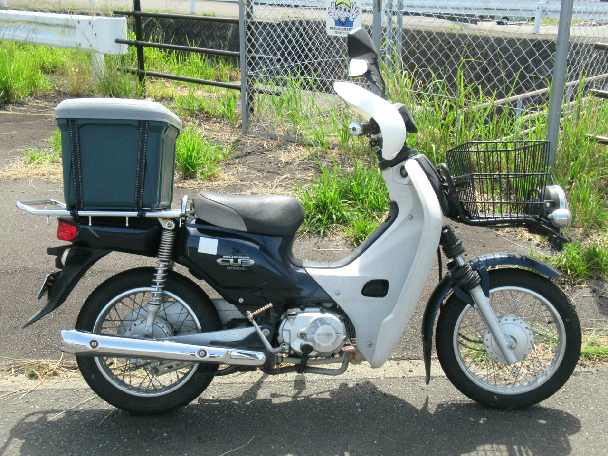

2016年式の「中華カブ」です。走行距離が7万kmを超えているため、元々は配達用途に使われていた個体と思われます。
Yahoo! オークションで静岡県の業者から購入しました。
| 2023/09/23 | クラッチ調整 |
| 2023/06/11 | 納車から1年 / 2000km (総走行76114km) |
| 2023/06/05 | オイルレベルゲージ 交換 |
| 2023/05/22 | エンジンのカーボン噛み解消 (ワコーズ エンジンコンディショナー) |
| 2023/02/19 | タコメーター (Runleader RL-HM032) 取付 |
| 2022/11/07 | 納車から1000km (総走行75114km) |
| 2022/10/22 | Howasuto バイクミラー 左右2本セット 取付 |
| 2022/10/09 | 鍵付き密閉ボックス (アイリスオーヤマ RVBOX460) 取付 |
| 2022/10/04 | ダイヤルロック (グリーンオーナメント No.41002) 取付 |
| 2022/07/18 | ドライブチェーン調整 |
| 2022/06/20 | エンジンプラグ交換 |
| 2022/06/13 | 車両登録・自賠責保険加入 |
| 2022/06/11 | 納車 |
| 2022/06/03 | Yahoo! オークションで落札 |
| 日付 | 給油地 | 総走行距離 | 走行距離 | 給油量 | 燃費（満タン法） |
|---|---|---|---|---|---|
| 2023/11/03 | 静岡県浜松市 | 76641.8 km | 143.0 km | 1.99 L | 71.86 km/L |
| 2023/10/14 | 静岡県浜松市 | 76498.8 km | 195.9 km | 2.66 L | 73.65 km/L |
| 2023/09/19 | 静岡県浜松市 | 76302.9 km | 188.0 km | 3.06 L | 61.44 km/L |
| 2023/06/10 | 静岡県浜松市 | 76114.9 km | 187.5 km | 2.59 L | 72.39 km/L |
| 2023/04/17 | 静岡県浜松市 | 75927.4 km | 220.5 km | 3.29 L | 67.02 km/L |
| 2023/02/20 | 愛知県豊川市 | 75706.9 km | 204.7 km | 3.00 L | 68.23 km/L |
| 2023/01/15 | 静岡県浜松市 | 75502.2 km | 139.6 km | 2.75 L | 50.76 km/L |
| 2022/11/21 | 静岡県浜松市 | 75362.6 km | 215.8 km | 2.69 L | 80.22 km/L |
| 2022/11/07 | 静岡県浜松市 | 75146.8 km | 207.7 km | 2.71 L | 76.64 km/L |
| 2022/11/03 | 静岡県浜松市 | 74939.1 km | 168.8 km | 2.70 L | 62.52 km/L |
| 2022/09/28 | 静岡県浜松市 | 74770.3 km | 260.5 km | 3.23 L | 80.65 km/L |
| 2022/08/20 | 静岡県浜松市 | 74509.8 km | 208.5 km | 2.84 L | 73.42 km/L |
| 2022/07/13 | 静岡県浜松市 | 74301.3 km | 187.3 km | 2.77 L | 67.62 km/L |
| 2022/06/11 | - | 74114.0 km | - | - | - |
| 日付 | 場所 | オドメーター距離 | 商品名 |
|---|---|---|---|
| 2023/11/03 | 静岡県浜松市 | 76630.9 km | カストロール Activ ESSENTIAL 4T (10W-30) |
| 2023/05/27 | 静岡県浜松市 | 76045.8 km | カストロール Go! 4T (20W-40) |
| 2022/09/25 | 静岡県浜松市 | 74690.0 km | カインズ 4サイクルバイク専用 (10W-40) |